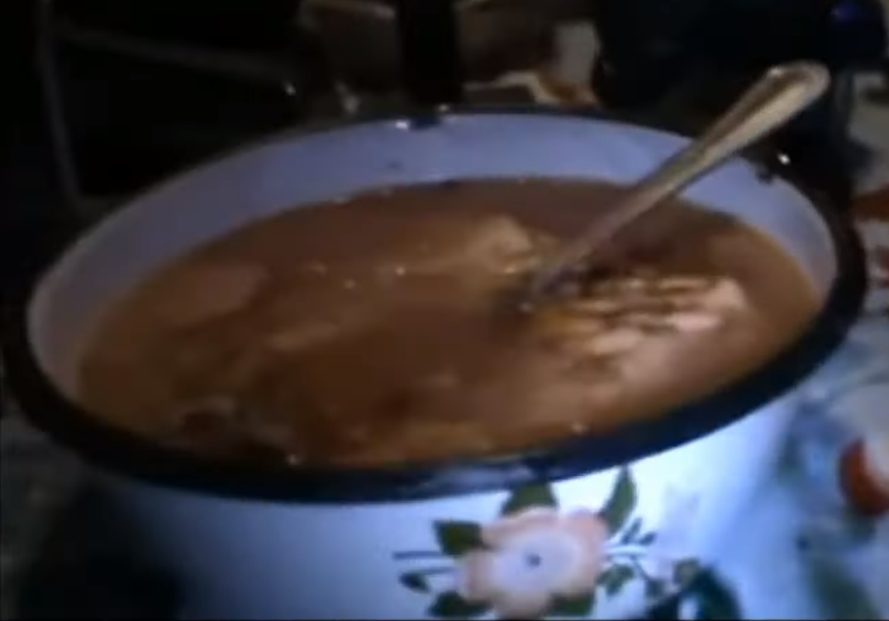

Kabab w kapuśniaku

Opis
Kabab w kapuśniaku – tradycyjna, niebanalna potrawa bombaska składająca się z zupy kapuśniaku, kababa i kiełbaski bożej.
Składniki
- kartofle
- kapusta
- wywar boży gotowany na boczku oraz kiełbasie (ma być biednie jak biedna była wtedy Szkolna)
- kiełbasa
- cebula
- seler
- marchew
- vageta
- sól z pieprzu
- majeranek
- liść laurowy
- ziele angielskie
- smalec do tuszenia
- kiszona kapusta
- kupny kebab
Wykonanie
- Tuszymy kapusniak
- Wlewamy kapunsiak do miski (najlepiej metalowej, takied dla psa)
- Dodajemy kababa
- Ciamkamy kababa lyzka i psznie jemy
Wstecz